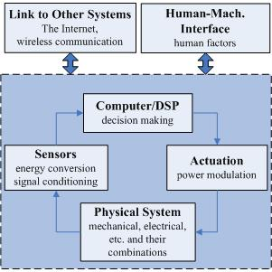
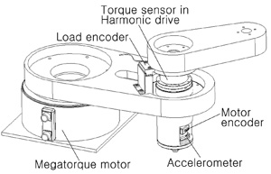

Sensor-Rich Drive Trains for Modern Mechatronic Systems
Attention: This webpage is based upon work supported by the National Science Foundation under Award No. 0529451. Any opinions, findings, and conclusions or recommendations expressed in this webpage are those of the authors and do not necessarily reflect the views of the National Science Foundation.
Introduction
The design and production of high-performance machineries and consumer products in a cost effective and timely manner is one of the ultimate challenges to engineers today. Mechatronics approach has been recognized to meet such challenges.
In modern mechatronic systems, the physical system and the computer (DSP) are interfaced by sensors and actuators. The sensor signals are utilized for variety of purposes such as:
- real time estimation of parameters such as mass and friction coefficients,
- real time identification of dynamics of drive trains, and
- motion/vibration control.

Technical Objectives
The technical objectives of the research are:
- to study sensing of various signals in the drive train, in particular, those not utilized in conventional practice such as acceleration signals, force signals in the drive train and end effector's position,
- to develop signal processing and decision making algorithms including their auto-tuning methodologies that take advantage of the sensed signals for the betterment of performance and other mechatonic advantages, and
- to demonstrate these benefits experimentally.
Example
Kinematic Kalman Filter (KKF) - An example demonstrating the advantage of sensing rich design.
The Kinematic Kalman Filter (KKF) fuses acceleration measurement and position measurement of a linear motor driven positioning table for simple and robust estimation of the velocity.
Consider a single degree of freedom motion system described by

where x is the position, u is the force input. When the position is measured, the velocity may be estimated by a model based Kalman Filter (MBKF) or state observer. Defining two state variables by x1 = x and x2 = dx/dt, the system and the Kalman filter are obtained in the following form:
System Model for MBKF
Consider a single degree of freedom motion system described by

where w(t) and v(t) are input noise and measurement noise, respectively. w(t) and v(t) are independent Gaussian white noise processes.
Model Based Kalman Filter (MBKF)

where f1 and f2 are the filter gains.
The MBKF depends on the plant parameters. Thus, if the plant parameters are poorly known or subject to change, its performance deteriorates.
If the position and acceleration are both measured, the system equation and the KKF are obtained in the following form:
System Model for KKF
where w(t) and v(t) are accelerometer measurement noise and position measurement noise, respectively.
Kinematic Kalman Filter (KKF)

where fk1 and fk2 are the filter gains.
KKF does not depend on model parameters at all. Thus, if the acceleration and the position are both measured, the velocity may be reliably estimated by KKF.
The figure below show that the KKF provides an accurate estimate of the velocity even when the resolution of an encoder is low.

Estimation of Speed by MBKF and KKF
Encoder resolution = 256 pulse per revolution
Equipment
Two-Link Robot

Two-Inertia System with Harmonic Gear

Further Advantages
- If an encoder and an accelerometer are installed on the motor side as well as on the load side, the velocity on both end can be accurately estimated by KKFs.
- State feedback control may be easily implemented. LQ tuning of state feedback gain provides excellent robustness properties.
- If all state variables are known, parameter identification and adaptive control may be easily implemented.
- Additional sensors such as force sensors may be added for reliable fault detection and effective failure management.
Related Publications
- Lee H-S., Tomizuka, M., "Robust Motion Controller Design for High-Accuracy Positioning Systems," IEEE Transactions on Industrial Electronics, Vol. 43, No. 1, pp. 48-55, 1996.
- Ishikawa, J. and Tomizuka, M. "Pivot Friction Compensation Using an Accelerometer and a Disturbance Observer for Hard Disk Drives," IEEE/ASME Transactions on Mechatronics, Vol. 3, No. 3, pp. 194-201, September 1998.
- Lee D-J., Tomizuka, M., "State/Parameter/ Disturbance Estimation with an Accelerometer in Precision Motion Control of a Linear Motor," Proceedings of 2001 ASME International Mechanical Engineering Congress and Exposition, IMECE2001/DSC-24578, 2001.
- Soo Jeon and Masayoshi Tomizuka, "Benefits of Acceleration Measurement in Velocity Estimation and Motion Control," accepted for publication in Control Engineering Practice.
Researchers
Cheng, Haifei (graduated) |
|